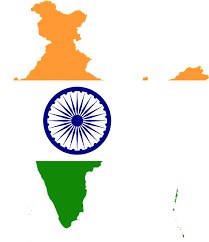

India

India, officially the Republic of India,[j][20] is a country in South Asia.
It is the seventh-largest country by area; the most populous country from June 2023
onwards;[21][22] and since its independence in 1947, the world's most populous democracy
.[23][24][25] Bounded by the Indian Ocean on the south, the Arabian Sea on the southwest,
and the Bay of Bengal on the southeast, it shares land borders with Pakistan to the west;[k] China, Nepal,
and Bhutan to the north; and Bangladesh and Myanmar to the east. In the Indian Ocean, India is near Sri Lanka
and the Maldives; its Andaman and Nicobar Islands share a maritime border with Thailand, Myanmar, and Indonesia.
Modern humans arrived on the Indian subcontinent from Africa no later than 55,000 years ago.[27][28][29] Their long occupation
, predominantly in isolation as hunter-gatherers, has made the region highly diverse, second only to Africa in human genetic diversity.
[30] Settled life emerged on the subcontinent in the western margins of the Indus river basin 9,000 years ago, evolving gradually into
the Indus Valley Civilisation of the third millennium BCE.[31] By 1200 BCE, an archaic form of Sanskrit, an Indo-European language, had
diffused into India from the northwest.[32][33] Its hymns recorded the dawning of Hinduism in India.[34]
India's pre-existing Dravidian languages were supplanted in the northern regions.[35] By 400 BCE, caste had emerged within Hinduism,
[36] and Buddhism and Jainism had arisen, proclaiming social orders unlinked to heredity.[37] Early political consolidations
gave rise to the loose-knit Maurya and Gupta Empires.[38] Widespread creativity suffused this era,[39] but the status of
women declined,[40] and untouchability became an organized belief.[l][41] In South India, the Middle kingdoms exported Dravidian
language scripts and religious cultures to the kingdoms of Southeast Asia.[42]
In the early mediaeval era, Christianity, Islam, Judaism, and Zoroastrianism became established on India's southern and western coasts.
[43] Muslim armies from Central Asia intermittently overran India's northern plains.[44] The resulting Delhi Sultanate drew northern
India into the cosmopolitan networks of mediaeval Islam.[45] In south India, the Vijayanagara Empire created a long-lasting composite
Hindu culture.[46] In the Punjab, Sikhism emerged, rejecting institutionalised religion.[47] The Mughal Empire, in 1526, ushered in two
centuries of relative peace,[48] leaving a legacy of luminous architecture.[m][49] Gradually expanding rule of the British East India
Company followed. It turned India into a colonial economy but consolidated its sovereignty.[50] British Crown rule began in 1858. The
rights promised to Indians were granted slowly,[51][52] but technological changes were introduced, and modern ideas of education and
public life took root.[53] A pioneering and influential nationalist movement emerged. Noted for nonviolent resistance it became the
major factor in ending British rule.[54][55] In 1947, the British Indian Empire was partitioned into two independent dominions,
[56][57][58][59] a Hindu-majority dominion of India and a Muslim-majority dominion of Pakistan. A large-scale loss of life and an
unprecedented migration accompanied the partition.[60]
India has been a federal republic since 1950, governed through a democratic parliamentary system. It is a pluralistic, multilingual and
multi-ethnic society. India's population grew from 361 million in 1951 to almost 1.4 billion in 2022.[61] During this time, its nominal
per capita income increased from US$64 annually to US$2,601, and its literacy rate from 16.6% to 74%. A comparatively destitute country
in 1951,[62] India has become a fast-growing major economy and a hub for information technology services; it has an expanding middle
class.[63] Indian movies and music increasingly influence global culture.[64] India has reduced its poverty rate, though at the cost
of increasing economic inequality.[65] It is a nuclear-weapon state that ranks high in military expenditure. It has disputes over Kashmir
with its neighbours, Pakistan and China, unresolved since the mid-20th century.[66] Among the socio-economic challenges India faces are
gender inequality, child malnutrition,[67] and rising levels of air pollution.[68] India's land is megadiverse with four biodiversity
hotspots.[69] India's wildlife, which has traditionally been viewed with tolerance in its culture,[70] is supported among these forests
and elsewhere in protected habitats.
Etymology
Main article: Names for India
According to the Oxford English Dictionary (third edition 2009), the name "India" is derived from the Classical Latin India, a reference to
South Asia and an uncertain region to its east. In turn the name "India" derived successively from Hellenistic Greek India ( Ἰνδία),
ancient Greek Indos ( Ἰνδός), Old Persian Hindush (an eastern province of the Achaemenid Empire), and ultimately its cognate, the Sanskrit
Sindhu, or "river", specifically the Indus River and, by implication, its well-settled southern basin.[71][72] The ancient Greeks
referred to the Indians as Indoi (Ἰνδοί), which translates as "The people of the Indus".[73]
The term Bharat (Bhārat; pronounced [ˈbʱaːɾət] ⓘ), mentioned in both Indian epic poetry and the Constitution of India,[74][75] is used in
its variations by many Indian languages. A modern rendering of the historical name Bharatavarsha, which applied originally to North India,
[76][77] Bharat gained increased currency from the mid-19th century as a native name for India.[74][78]
Hindustan ([ɦɪndʊˈstaːn] ⓘ) is a Middle Persian name for India that became popular by the 13th century,[79] and was used widely since the
era of the Mughal Empire. The meaning of Hindustan has varied, referring to a region encompassing the northern Indian subcontinent
(present-day northern India and Pakistan) or to India in its near entirety.[74][78][80]
History
Main articles: History of India and History of the Republic of India
Ancient India
Manuscript illustration, c. 1650, of the Sanskrit epic Ramayana, composed in story-telling fashion c. 400 BCE – c. 300 CE[81]
By 55,000 years ago, the first modern humans, or Homo sapiens, had arrived on the Indian subcontinent from Africa, where they had
earlier evolved.[27][28][29] The earliest known modern human remains in South Asia date to about 30,000 years ago.[27] After 6500 BCE,
evidence for domestication of food crops and animals, construction of permanent structures, and storage of agricultural surplus appeared
in Mehrgarh and other sites in Balochistan, Pakistan.[82] These gradually developed into the Indus Valley Civilisation,[83][82] the first
urban culture in South Asia,[84] which flourished during 2500–1900 BCE in Pakistan and western India.[85] Centred around cities such
as Mohenjo-daro, Harappa, Dholavira, and Kalibangan, and relying on varied forms of subsistence, the civilisation engaged robustly in
crafts production and wide-ranging trade.[84]
During the period 2000–500 BCE, many regions of the subcontinent transitioned from the Chalcolithic cultures to the Iron Age ones.[86]
The Vedas, the oldest scriptures associated with Hinduism,[87] were composed during this period,[88] and historians have analysed
these to posit a Vedic culture in the Punjab region and the upper Gangetic Plain.[86] Most historians also consider this period to
have encompassed several waves of Indo-Aryan migration into the subcontinent from the north-west.[87] The caste system, which created
a hierarchy of priests, warriors, and free peasants, but which excluded indigenous peoples by labelling their occupations impure, arose
during this period.[89] On the Deccan Plateau, archaeological evidence from this period suggests the existence of a chiefdom stage of
political organisation.[86] In South India, a progression to sedentary life is indicated by the large number of megalithic monuments
dating from this period,[90] as well as by nearby traces of agriculture, irrigation tanks, and craft traditions.[90]
Cave 26 of the rock-cut Ajanta Caves
In the late Vedic period, around the 6th century BCE, the small states and chiefdoms of the Ganges Plain and the north-western regions
had consolidated into 16 major oligarchies and monarchies that were known as the mahajanapadas.[91][92] The emerging urbanisation gave
rise to non-Vedic religious movements, two of which became independent religions. Jainism came into prominence during the life of its e
xemplar, Mahavira.[93] Buddhism, based on the teachings of Gautama Buddha, attracted followers from all social classes excepting the m
iddle class; chronicling the life of the Buddha was central to the beginnings of recorded history in India.[94][95][96] In an age of
increasing urban wealth, both religions held up renunciation as an ideal,[97] and both established long-lasting monastic traditions.
Politically, by the 3rd century BCE, the kingdom of Magadha had annexed or reduced other states to emerge as the Maurya Empire.[98]
The empire was once thought to have controlled most of the subcontinent except the far south, but its core regions are now thought
to have been separated by large autonomous areas.[99][100] The Mauryan kings are known as much for their empire-building and determined
management of public life as for Ashoka's renunciation of militarism and far-flung advocacy of the Buddhist dhamma.[101][102]
The Sangam literature of the Tamil language reveals that, between 200 BCE and 200 CE, the southern peninsula was ruled by the Cheras,
the Cholas, and the Pandyas, dynasties that traded extensively with the Roman Empire and with West and Southeast Asia.[103][104]
In North India, Hinduism asserted patriarchal control within the family, leading to increased subordination of women.[105][98] By
the 4th and 5th centuries, the Gupta Empire had created a complex system of administration and taxation in the greater Ganges Plain;
this system became a model for later Indian kingdoms.[106][107] Under the Guptas, a renewed Hinduism based on devotion, rather than
the management of ritual, began to assert itself.[108] This renewal was reflected in a flowering of sculpture and architecture,
which found patrons among an urban elite.[107] Classical Sanskrit literature flowered as well, and Indian science, astronomy,
medicine, and mathematics made significant advances.[107]
Medieval India
Main article: Medieval India
Brihadeshwara temple, Thanjavur, completed in 1010 CE
The Qutub Minar, 73 m (240 ft) tall, completed by the Sultan of Delhi, Iltutmish
The Indian early medieval age, from 600 to 1200 CE, is defined by regional kingdoms and cultural diversity.[109]
When Harsha of Kannauj, who ruled much of the Indo-Gangetic Plain from 606 to 647 CE, attempted to expand southwards,
he was defeated by the Chalukya ruler of the Deccan.[110] When his successor attempted to expand eastwards, he was defeated by
the Pala king of Bengal.[110] When the Chalukyas attempted to expand southwards, they were defeated by the Pallavas from farther
south, who in turn were opposed by the Pandyas and the Cholas from still farther south.[110] No ruler of this period was able to
create an empire and consistently control lands much beyond their core region.[109] During this time, pastoral peoples, whose land
had been cleared to make way for the growing agricultural economy, were accommodated within caste society, as were new non-traditional
ruling classes.[111] The caste system consequently began to show regional differences.[111]
In the 6th and 7th centuries, the first devotional hymns were created in the Tamil language.[112] They were imitated all over
India and led to both the resurgence of Hinduism and the development of all modern languages of the subcontinent.[112] Indian royalty,
big and small, and the temples they patronised drew citizens in great numbers to the capital cities, which became economic hubs as well.
[113] Temple towns of various sizes began to appear everywhere as India underwent another urbanisation.[113] By the 8th and 9th centuries,
the effects were felt in Southeast Asia, as South Indian culture and political systems were exported to lands that became part of
modern-day Myanmar, Thailand, Laos, Brunei, Cambodia, Vietnam, Philippines, Malaysia, and Indonesia.[114] Indian merchants, scholars,
and sometimes armies were involved in this transmission; Southeast Asians took the initiative as well, with many sojourning in Indian
seminaries and translating Buddhist and Hindu texts into their languages.[114]
India, officially the Republic of India,[j][20] is a country in South Asia.
It is the seventh-largest country by area; the most populous country from June 2023
onwards;[21][22] and since its independence in 1947, the world's most populous democracy
.[23][24][25] Bounded by the Indian Ocean on the south, the Arabian Sea on the southwest,
and the Bay of Bengal on the southeast, it shares land borders with Pakistan to the west;[k] China, Nepal,
and Bhutan to the north; and Bangladesh and Myanmar to the east. In the Indian Ocean, India is near Sri Lanka
and the Maldives; its Andaman and Nicobar Islands share a maritime border with Thailand, Myanmar, and Indonesia.
Modern humans arrived on the Indian subcontinent from Africa no later than 55,000 years ago.[27][28][29] Their long occupation
, predominantly in isolation as hunter-gatherers, has made the region highly diverse, second only to Africa in human genetic diversity.
[30] Settled life emerged on the subcontinent in the western margins of the Indus river basin 9,000 years ago, evolving gradually into
the Indus Valley Civilisation of the third millennium BCE.[31] By 1200 BCE, an archaic form of Sanskrit, an Indo-European language, had
diffused into India from the northwest.[32][33] Its hymns recorded the dawning of Hinduism in India.[34]
India's pre-existing Dravidian languages were supplanted in the northern regions.[35] By 400 BCE, caste had emerged within Hinduism,
[36] and Buddhism and Jainism had arisen, proclaiming social orders unlinked to heredity.[37] Early political consolidations
gave rise to the loose-knit Maurya and Gupta Empires.[38] Widespread creativity suffused this era,[39] but the status of
women declined,[40] and untouchability became an organized belief.[l][41] In South India, the Middle kingdoms exported Dravidian
language scripts and religious cultures to the kingdoms of Southeast Asia.[42]
In the early mediaeval era, Christianity, Islam, Judaism, and Zoroastrianism became established on India's southern and western coasts.
[43] Muslim armies from Central Asia intermittently overran India's northern plains.[44] The resulting Delhi Sultanate drew northern
India into the cosmopolitan networks of mediaeval Islam.[45] In south India, the Vijayanagara Empire created a long-lasting composite
Hindu culture.[46] In the Punjab, Sikhism emerged, rejecting institutionalised religion.[47] The Mughal Empire, in 1526, ushered in two
centuries of relative peace,[48] leaving a legacy of luminous architecture.[m][49] Gradually expanding rule of the British East India
Company followed. It turned India into a colonial economy but consolidated its sovereignty.[50] British Crown rule began in 1858. The
rights promised to Indians were granted slowly,[51][52] but technological changes were introduced, and modern ideas of education and
public life took root.[53] A pioneering and influential nationalist movement emerged. Noted for nonviolent resistance it became the
major factor in ending British rule.[54][55] In 1947, the British Indian Empire was partitioned into two independent dominions,
[56][57][58][59] a Hindu-majority dominion of India and a Muslim-majority dominion of Pakistan. A large-scale loss of life and an
unprecedented migration accompanied the partition.[60]
India has been a federal republic since 1950, governed through a democratic parliamentary system. It is a pluralistic, multilingual and
multi-ethnic society. India's population grew from 361 million in 1951 to almost 1.4 billion in 2022.[61] During this time, its nominal
per capita income increased from US$64 annually to US$2,601, and its literacy rate from 16.6% to 74%. A comparatively destitute country
in 1951,[62] India has become a fast-growing major economy and a hub for information technology services; it has an expanding middle
class.[63] Indian movies and music increasingly influence global culture.[64] India has reduced its poverty rate, though at the cost
of increasing economic inequality.[65] It is a nuclear-weapon state that ranks high in military expenditure. It has disputes over Kashmir
with its neighbours, Pakistan and China, unresolved since the mid-20th century.[66] Among the socio-economic challenges India faces are
gender inequality, child malnutrition,[67] and rising levels of air pollution.[68] India's land is megadiverse with four biodiversity
hotspots.[69] India's wildlife, which has traditionally been viewed with tolerance in its culture,[70] is supported among these forests
and elsewhere in protected habitats.